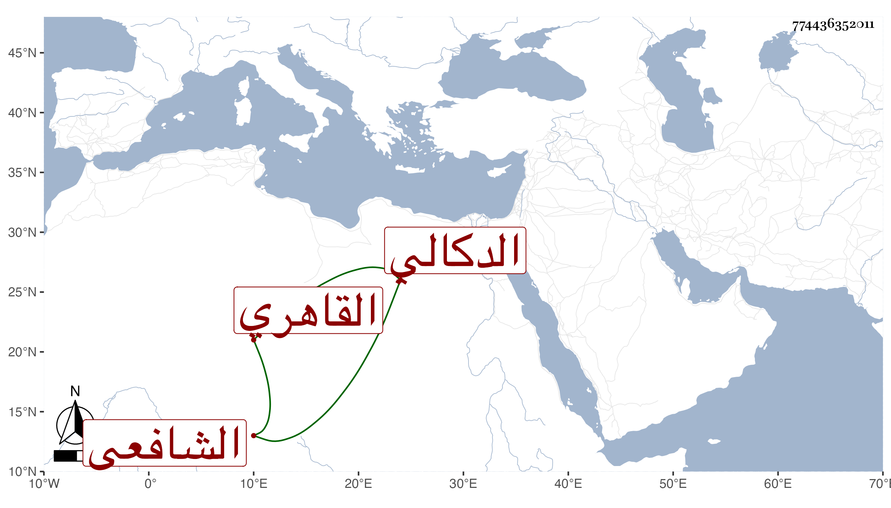

0902Sakhawi.DawLamic.ITO20230111-ara1.EIS1600.774436352011
Biography ID: 774436352011
21
محمد بن عبد الرحمن بن محمد بن علي بن عبد الواحد بن يوسف بن إبراهيم بن عبد الرحيم أبو أمامة بن الزين أبي هريرة بن الشمس أبي أمامة الدكالي الأصل القاهري الشافعي ويعرف كسلفه بابن النقاش ، ذكره شيخنا في إنبائه فقال : اشتغل قليلا وهو شاب ثم صار يخالط الأمراء في تلك الفتن التي كانت بعد وفاة برقوق فجرت له خطوب وقد خطب نيابة عن أبيه بجامع طولون ، وحج مرارا وجاور وتمشيخ بعد وفاة أبيه فلم ينجب وأصابه فألج في أوائل سنة وفاته ثم مات في يوم الثلاثاء سادس عشري شعبان سنة خمس وأربعين وقد قارب السبعين ودفن بجانب أبيه بباب القرافة رحمه الله .
